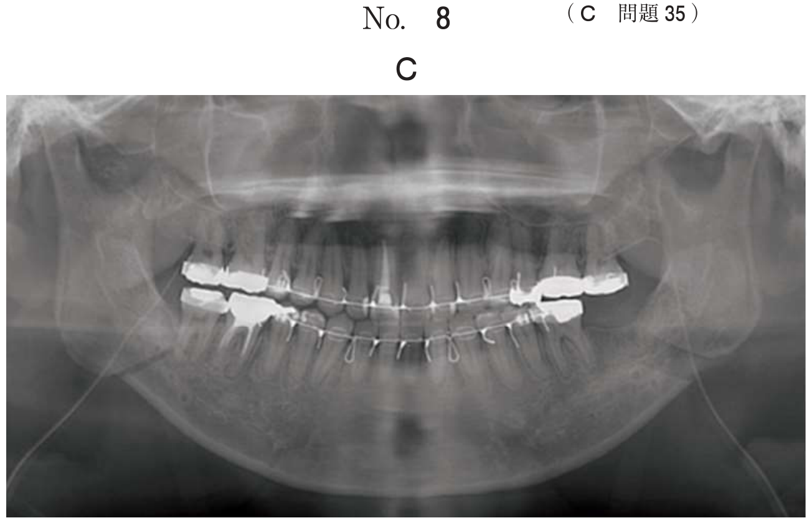
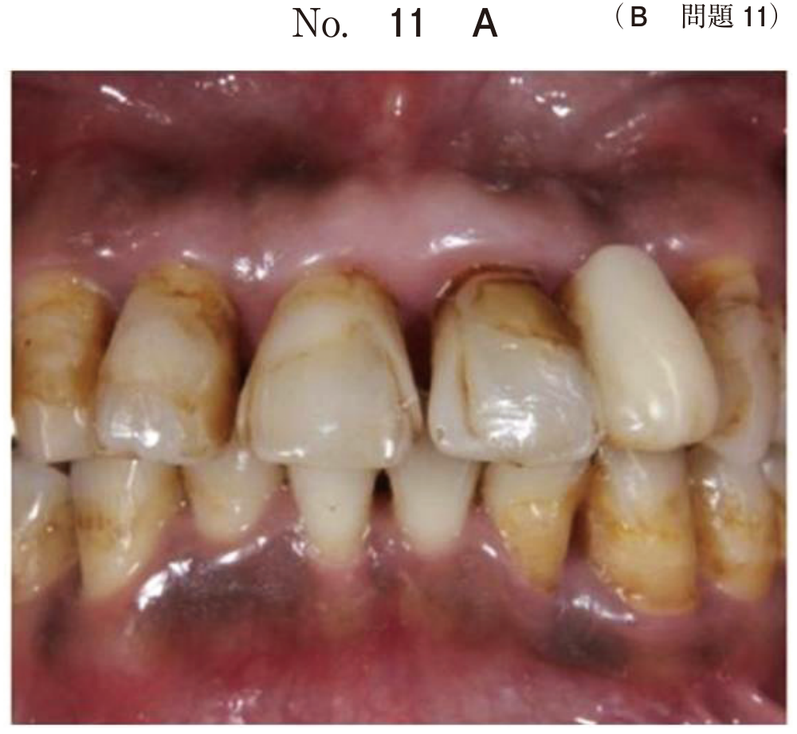
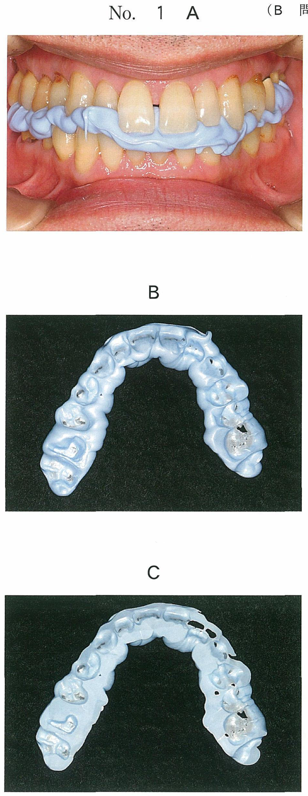

歯冠破折
歯冠破折の分類
Andreasenの分類（歯の亀裂と破折）
| 分類 | 特徴 |
|---|---|
| エナメル質の亀裂 | 不完全破折、着色がみられることがある |
| エナメル質の破折 | エナメル質に限局した欠損 |
| エナメル質-象牙質破折（非露髄） | 象牙質に達するが歯髄は露出しない |
| エナメル質-象牙質破折（露髄） | 歯髄が露出、疼痛・出血を伴う |
治療方針決定の考慮因子 ★★★
- 経過時間（受傷からの時間）
- 露髄面の大きさ（2mm未満 or 以上）
- 患者の年齢（若年者 vs 高齢者）
- 受傷時の状態（汚染の有無）
※歯種、歯冠の変色、露髄部からの出血量は治療方針決定に直接関与しない
打撲によって健全歯の歯冠が破折し露髄した。
歯髄に対する治療方針決定で考慮するのはどれか。2つ選べ。
b 経過時間
c 歯冠の変色
d 露髄部の大きさ
e 露髄部からの出血量
【解説】露髄を伴う外傷歯の治療方針は、経過時間と露髄面の大きさで決定する。経過時間が短く露髄面が小さければ直接覆髄、大きければ生活断髄を選択。歯種や変色は方針決定に直接関与しない。
露髄を伴う歯冠破折の処置
露髄面の大きさによる選択
| 露髄面 | 処置 |
|---|---|
| 2mm未満（小さい） | 直接覆髄 |
| 2mm以上（大きい） | 生活歯髄切断（断髄） |
患者の年齢による修正
| 患者 | 処置の選択 | 理由 |
|---|---|---|
| 若年者・歯根未完成歯 | 生活断髄 → アペキソゲネーシス | 歯根の完成を期待 |
| 高齢者 | 抜髄 | 歯髄の退行性変化あり |
| 歯頸部付近の破折 | 抜髄 | ポストコアが必要 |
17歳の男子。転倒による上顎前歯の歯冠破折を主訴として来院した。受傷後直ちに受診したという。1┘と└1には自発痛はなく、共に歯髄電気診で生活反応を示した。初診時の口腔内写真（別冊No.17A）とエックス線画像（別冊No.17B）を別に示す。歯周組織検査結果の一部を表に示す。
1┘と└1に行う処置の組合せで正しいのはどれか。1つ選べ。


a 直接覆髄 コンポジットレジン修復
b 生活歯髄切断 暫間的間接覆髄
c 生活歯髄切断 コンポジットレジン修復
d 麻酔抜髄 コンポジットレジン修復
e 麻酔抜髄 レジン前装冠装着
【解説】17歳の若年者。1┘は露髄を伴う破折で露髄面が大きいため生活歯髄切断を選択。└1は非露髄の破折なのでコンポジットレジン修復で対応。若年者なので歯髄保存を優先する。
15歳の男子。上顎前歯の歯冠破折を主訴として来院した。1時間前に受傷し、口での呼吸で強い痛みがあるという。1⏌の動揺は生理的範囲内である。初診時の口腔内写真（別冊No.16A）とエックス線写真（別冊No.16B）とを別に示す。
適切な処置はどれか。1つ選べ。


b 直接覆髄法
c 感染根管治療
d アペキソゲネーシス
e アペキシフィケーション
【解説】15歳だが、X線所見で歯根は完成している。露髄面が大きく、写真から歯冠の大部分が喪失していることがわかる。歯冠修復のためポストコアが必要となり、抜髄が適応となる。アペキソゲネーシスは歯根未完成歯の生活歯髄切断後に期待する治療法。
歯の亀裂（クラック）の診断 ★
臨床症状
- 咀嚼時の一過性の鋭い痛み
- 一過性の冷水痛
- 特定部位で噛むと痛い（割箸テスト）
確定診断に有効な検査
- 染色液：亀裂部に浸透して可視化
- 実体顕微鏡（マイクロスコープ）：微細な亀裂を直視
- 透照診：透過光の屈折で亀裂を確認
※咬合紙、研究用模型、咬合法X線では亀裂の確定診断は困難
53歳の女性。上顎左側第一大臼歯の違和感を主訴として来院した。1か月ほど前から咀嚼時に時々鋭い痛みを感じていたという。一過性の冷水痛があり、歯髄電気診に反応する。頰側内斜面で割箸を噛ませると痛みを訴える。初診時の口腔内写真（別冊No.2A）、エックス線写真（別冊No.2B）及びアマルガム除去後の口腔内写真（別冊No.2C）を別に示す。
確定診断に有効なのはどれか。2つ選べ。


b 染色液
c 研究用模型
d 実体顕微鏡
e 咬合法エックス線検査
【解説】咀嚼時の鋭い痛み、一過性の冷水痛、割箸テスト陽性は歯の亀裂（クラック）を示唆する。亀裂の確定診断には染色液（亀裂部への浸透）と実体顕微鏡（微細な亀裂の直視）が有効。咬合紙や模型では亀裂は検出できない。
まとめ：歯冠破折の処置選択
| 状態 | 処置 |
|---|---|
| 非露髄 | コンポジットレジン修復 |
| 露髄・小さい（＜2mm） | 直接覆髄 |
| 露髄・大きい（≧2mm）・若年者 | 生活歯髄切断 |
| 露髄・高齢者/歯頸部破折 | 抜髄 |